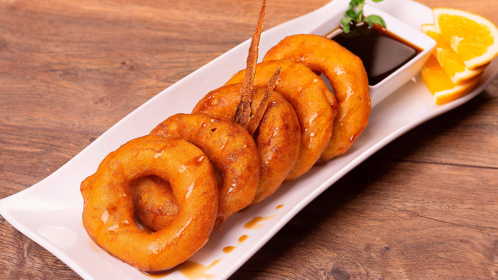

Picarones

Description
Indulge in the delightful aroma and flavors of picarones, a beloved Peruvian treat that tantalizes the taste buds and warms the soul. To begin crafting these delectable delights, combine mashed sweet potatoes with pumpkin puree, infusing the dough with a luscious sweetness and vibrant color.
Enhance the mixture with a touch of anise, cinnamon, and cloves, imparting a subtle yet aromatic spice. Once the dough is perfectly seasoned, incorporate flour and yeast, kneading until the dough becomes soft and elastic. Allow it to rest and rise, then shape the dough into rings, weaving intricate patterns that add to their allure.
Ingredients
- 2 cups (about 400g) of mashed sweet potatoes
- 1 cup (about 200g) of pumpkin puree
- 2 cups (about 250g) of all-purpose flour
- 1 tablespoon of active dry yeast
- 1 teaspoon of ground cinnamon
- 1/2 teaspoon of ground cloves
- 1/2 teaspoon of ground anise
- 1/4 cup (about 50g) of granulated sugar
- 1 cup (about 240ml) of warm water
- Vegetable oil, for frying
- Chancaca syrup or molasses, for serving
Steps
- In a large mixing bowl, combine the mashed sweet potatoes, pumpkin puree, flour, yeast, ground cinnamon, ground cloves, ground anise, and granulated sugar.
- Gradually add the warm water to the mixture, stirring continuously, until a smooth and slightly sticky dough forms.
- Cover the bowl with a clean kitchen towel and let the dough rest in a warm place for about 1 hour, or until it doubles in size.
- Once the dough has risen, heat vegetable oil in a deep frying pan or pot to about 350°F (175°C).
- Wet your hands with water to prevent sticking, then take portions of the dough and shape them into rings, about 3 inches (7-8 cm) in diameter, using your fingers to form a hole in the center of each ring.
- Carefully place the formed picarones into the hot oil, frying them in batches to avoid overcrowding the pan.
- Fry the picarones for about 3-4 minutes on each side, or until they are golden brown and cooked through.
- Use a slotted spoon to remove the fried picarones from the oil and transfer them to a plate lined with paper towels to drain any excess oil.
- Serve the picarones warm, drizzled with chancaca syrup or molasses for an authentic touch.
- Enjoy these delicious Peruvian treats as a delightful dessert or snack, savoring their sweet and spiced flavors with each bite.